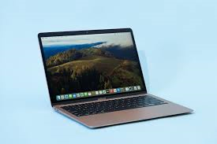
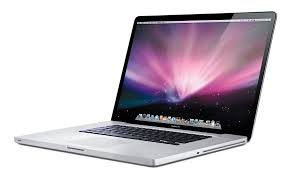

Mac Laptops - Apple
Laptops that are sleek, powerful, and reliable.
Top 3 Most Popular Mac Laptops
-
Apple MacBook Air 13-inch - M2 chip, 8-core CPU, 8GB RAM, 256GB of
Storage
-
Apple MacBook Pro 14-inch - M3 Pro chip, 11-core CPU, 18GB RAM, 512GB of
Storage
-
Apple MacBook Air 15-inch - M2 chip, 8-core CPU, 8GB RAM, 256GB of
Storage
Average Retail Prices as of 2025